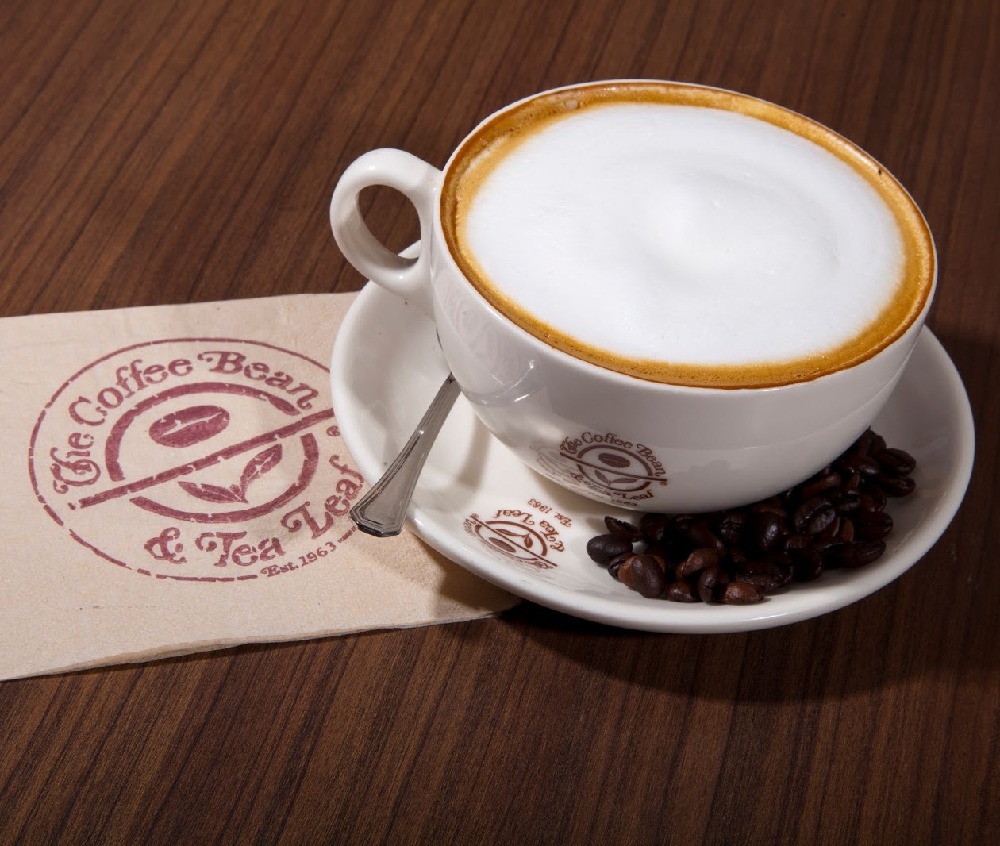

Filipinos are obviously coffee lovers.
Branches of various international coffee shops like Coffee Bean and Tea Leaf, Starbucks, Figaro, UCC Coffee, and Seattle's Best are found in metro areas in the Philippines. As Filipinos patronize imported coffee brands, this is often perceived as one of the effects of globalization.
When Filipinos enter these shops, they experience globalization as customers of different nationalities. While this shows global interconnectedness and modernity, multinational and transnational corporations are also believed to create problems like cheap labor and exploitation.
Globalization is viewed as a process that presents two sides—good or bad; positive or negative.